🌐 官方在线文档与静态镜像中心 (GitHub Pages)：https://shijiuwei.github.io/lightcraft-mirror-764/
📚 技术规约与文档归档菜单 (Docs Catalog)：https://shijiuwei.github.io/lightcraft-mirror-764/docs/

LightCraft
Your photos. Your pixels. Your machine.
Photo library and raw development; an open-source, clean-room reimplementation of Adobe Lightroom, rebuilt in pure Rust.
Native on macOS, Windows and Linux. In the browser via WebAssembly. Drivable end to end by AI agents over MCP.
LightCraft on getartcraft.com · ArtCraft · All Crafting Apps
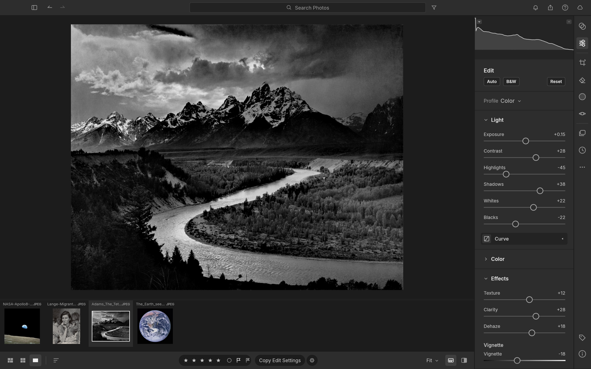
Ansel Adams, "The Tetons and the Snake River" (1942). Public domain, U.S. National Archives. Developed in LightCraft.
[!NOTE] ArtCraft is a community of artists from all walks of life. Digital, generative, music, games — if you make things, you're one of us. Come say hi on Discord.
Editing · Color grading · Before & after · Masking · Presets · Library · Agents & MCP · Performance · Status · Quick start · Roadmap · Downloads · Crafting Apps
Edit like you mean it
LightCraft is a complete darkroom in a single native app. Every adjustment is non-destructive, so your originals are never touched. Every slider renders through a scene-referred, wide-gamut, 32-bit float pipeline: highlights roll off like film, shadows open up without halos, and colour stays clean from capture to export.
☀️ LightExposure, Contrast, Highlights, Shadows, Whites, Blacks, with edge-aware local tone mapping (a guided filter on log-luminance). Pulling −100 Highlights recovers a blown sky without the grey halos you'd get from a naive curve. 🎨 ColorWhite balance by temperature and tint (Kelvin for raw, relative for JPEG) with presets, Auto and a click-to-neutralise eyedropper. Vibrance that protects skin tones, Saturation, an 8-band Color Mixer (hue / saturation / luminance) and 3-way Color Grading wheels with blending and balance. All of it is computed in OkLCh, a modern perceptual colour space. |
✨ EffectsTexture for fine detail, Clarity for mid-tone punch, Dehaze (dark-channel prior with guided refinement; push it negative to add atmosphere), post-crop Vignette with highlight priority, roundness and feather, and resolution-independent film Grain with size and roughness. 📈 Tone CurveParametric region curve with movable splits plus point curves for RGB, Red, Green and Blue. Curves are monotone by construction, so you never get an accidental tone inversion. |
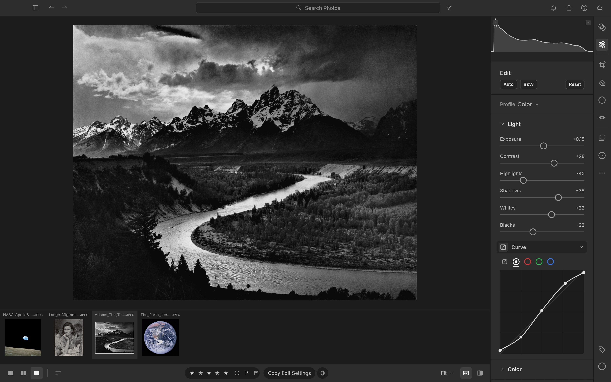
A gentle S on the RGB point curve, right under the Light sliders. Ansel Adams, 1942 (public domain).
Color grading, the cinematic way
Split-tone shadows, midtones and highlights independently with drag-anywhere colour wheels. Below, Dorothea Lange's Migrant Mother gets a warm, print-like tone (highlights at 42°, shadows at 28°) in two drags.
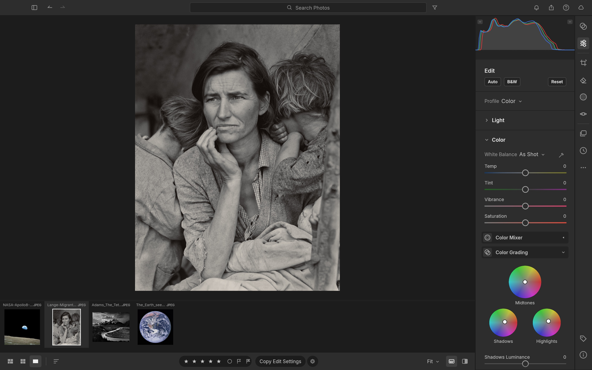
Shadows, midtones and highlights wheels in the Color panel. Dorothea Lange, "Migrant Mother" (1936). Public domain, Library of Congress.
Before & after
Hold \ to peek at the original, press Y for side by side, or Shift+Y for a split view. Every image below is a real screenshot of LightCraft, captured automatically by an agent through the control channel.
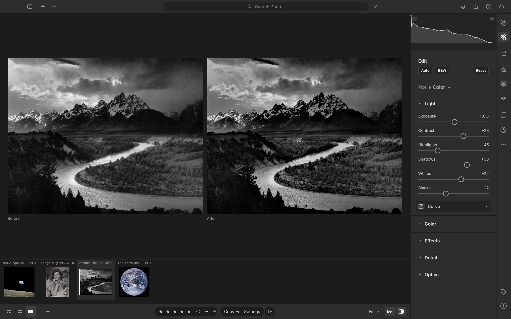 The Tetons and the Snake River. Highlights −45, Shadows +38, Clarity +28, Dehaze +18. Ansel Adams, 1942 (public domain). |
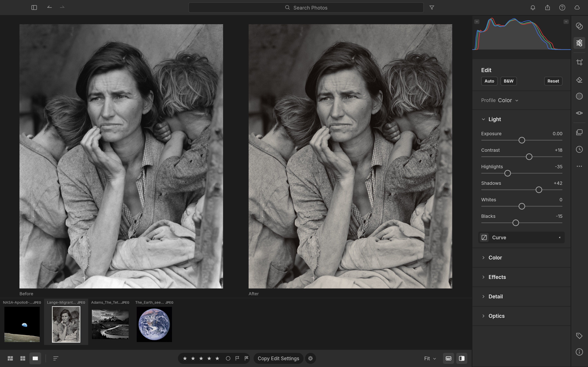 Migrant Mother. Shadows +42, Texture +18, split-toned grade, vignette. Dorothea Lange, 1936 (public domain). |
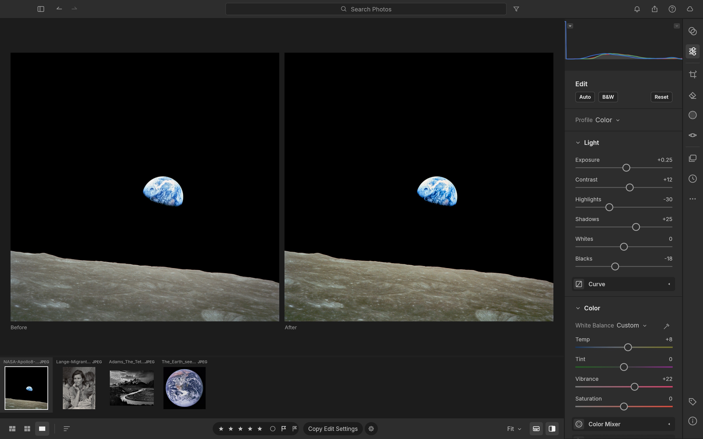 Earthrise. Dehaze +22, Highlights −30, warmer white balance, Vibrance +22. NASA / Bill Anders, Apollo 8, 1968 (public domain). |
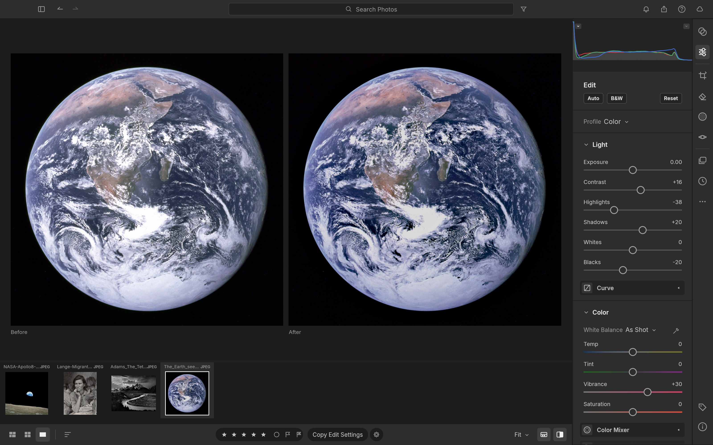 The Blue Marble. Highlights −38, Blacks −20, Dehaze +15, Vibrance +30. NASA, Apollo 17, 1972 (public domain). |
Masking that goes where you point
Paint with a Brush (size, feather, flow, density, erase), drop Linear and Radial Gradients with draggable pins, or select by Luminance Range, Color Range, Sky, Subject and Background. Combine components with Add / Subtract / Intersect, invert any of them, and dial in 15 local adjustments per mask (Temp, Tint, Exposure, Contrast, Highlights, Shadows, Whites, Blacks, Texture, Clarity, Dehaze, Hue, Saturation, Sharpness, Noise) plus an overall Amount.
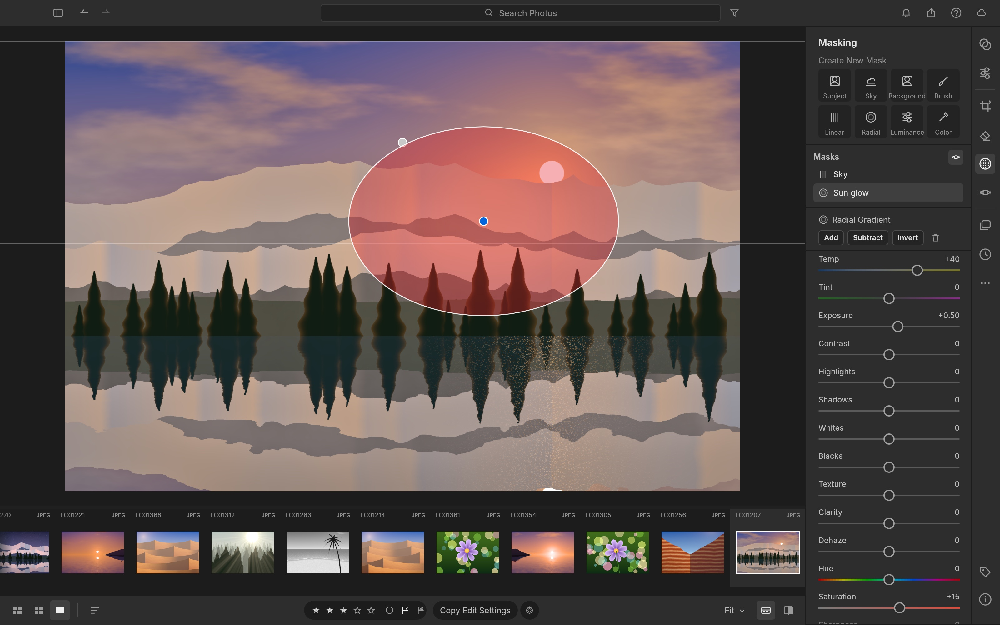
A radial "Sun glow" mask (Temp +40, Exposure +0.50) layered over a linear "Sky" mask. Photo from LightCraft's procedurally generated demo library.
Presets, profiles & the Color Mixer
Eighteen hand-built presets ship in the box (Golden Hour, Teal & Orange, Faded Matte, Selenium Tone, Crisp Landscape and more), each with an Amount slider from 0 to 200 %. Save your own from any group of settings, mark favourites, and copy, paste or sync edits across a whole selection with exactly the groups you choose.
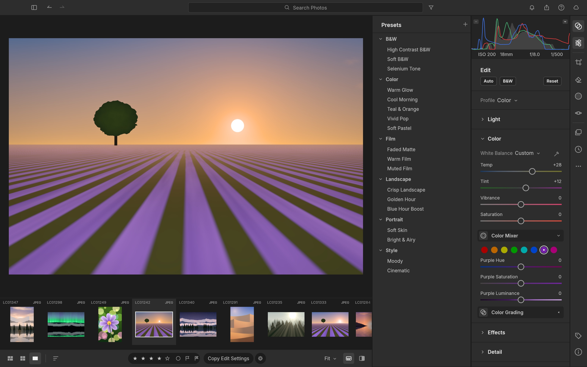
The Presets column next to the 8-band Color Mixer. Photo from the demo library.
✂️ Crop, straighten & geometryFree or locked aspect ratios (1:1, 4:5, 5:7, 2:3, 4:3, 16:9, 16:10, original), drag-to-rotate straightening that always keeps the largest crop inside the image, thirds / grid / golden-ratio overlays, flips and 90° rotations, plus manual Vertical, Horizontal, Rotate, Aspect, Scale and Offset transforms. |
⚫️ Black & WhiteOne click (V) to monochrome, with an 8-band B&W Mix that lets you darken skies or make foliage glow. Then tone it with Color Grading for selenium, sepia or split-tone prints. |
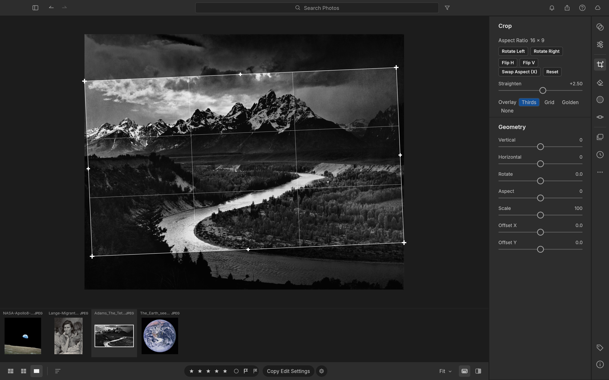 A 16:9 crop straightened +2.5° with the thirds overlay. Ansel Adams, 1942 (public domain). |
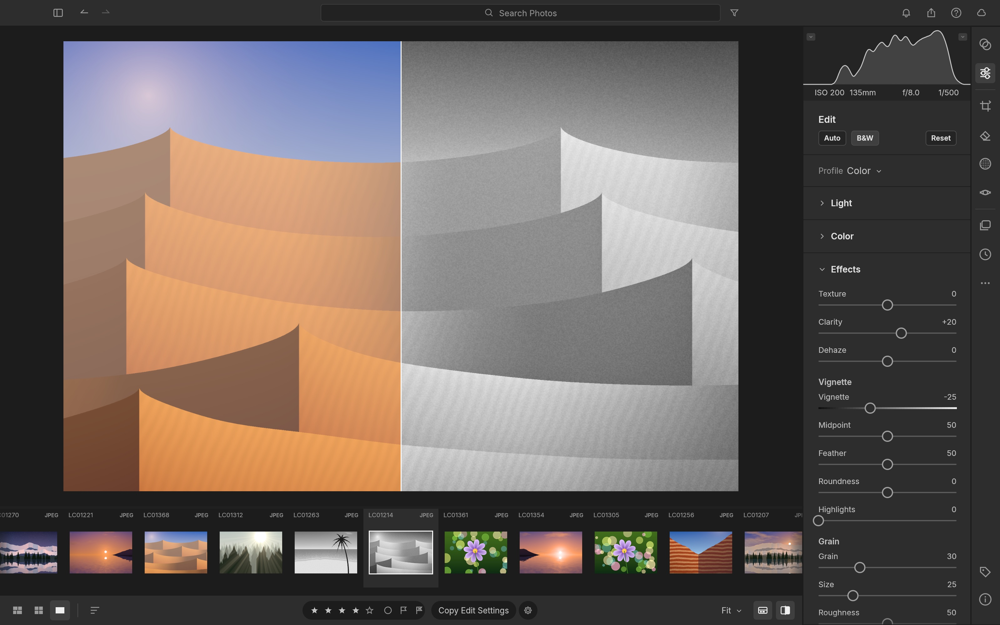 Split view: colour original on the left, B&W with Clarity, Vignette and Grain on the right. Demo library. |
Organize everything
A library that stays out of your way: All Photos, Recently Added, Picks, By Date, Albums nested in
Folders, and Recently Deleted. Rate with 0–5, flag with P / X /
U, colour-label with 6–9. Search understands fields:
rating:>3 flag:pick iso:>800 camera:x2 date:2026-04 keyword:mountains. Every view sorts by capture date,
import date, edit date, name, rating, size or at random (a stable shuffle; View → Sort → Reshuffle for a new one). The justified Photo Grid and Square Grid views are virtualized,
so they stay smooth whether you have forty photos or forty thousand.
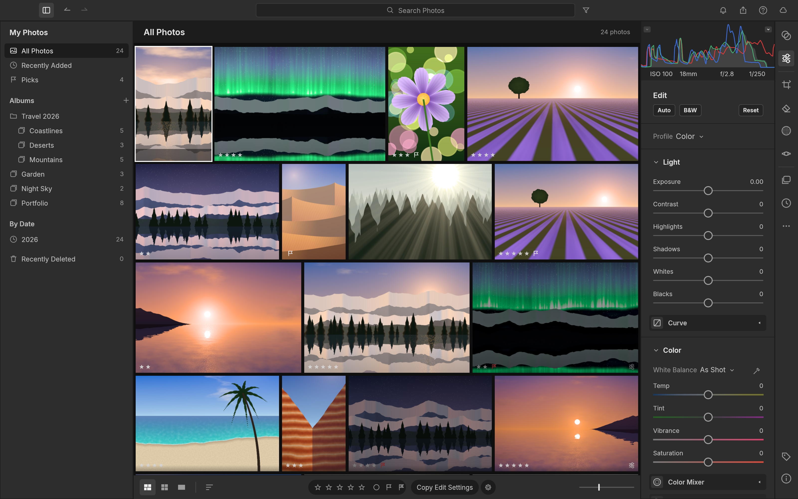 Photo Grid with albums nested in a folder, ratings and flags. Demo library. |
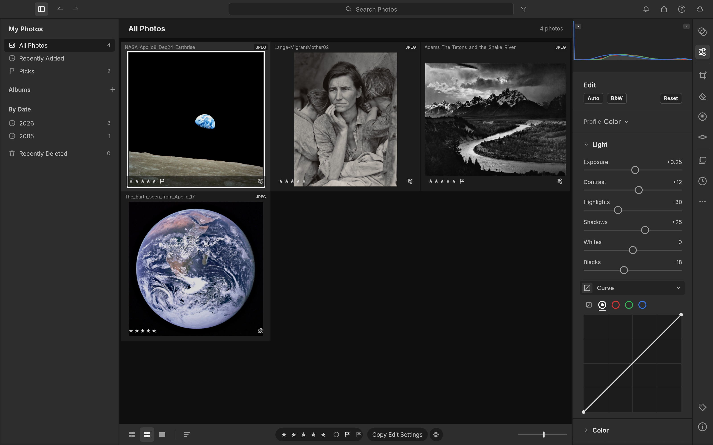 Square Grid of the four public-domain showcase photos. |
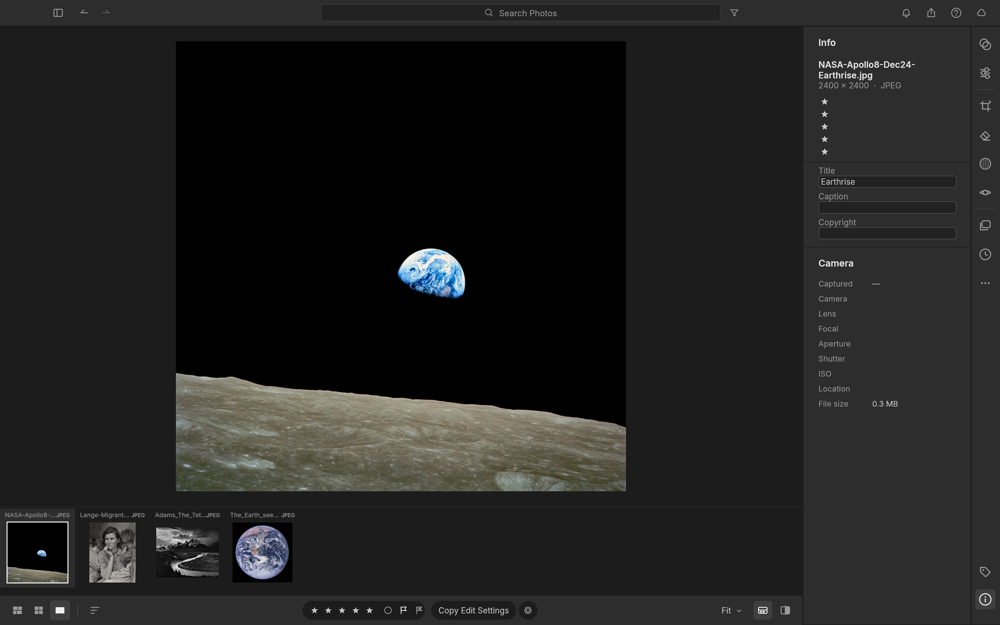 The Info panel: file, dimensions, rating, title, caption, copyright and camera metadata. NASA / Bill Anders, "Earthrise", Apollo 8, 1968 (public domain). |
|
Built for agents
Every menu item, slider, brush stroke, crop handle and keystroke in LightCraft is a command with a stable id and JSON parameters. The UI, the keyboard, the CLI, a JSON-lines control channel and an MCP server all dispatch through the same entry point. An agent can cull a shoot, develop it, mask a sky and export it, and see the result.
lightcraft --control 7980 ~/Pictures/trip
{"method": "engine.execute", "params": {"command": "photo.flag", "params": {"flag": "pick"}}}
{"method": "engine.execute", "params": {"command": "develop.set", "params": {"values": {"light.highlights": -45, "light.shadows": 38}}}}
{"method": "engine.execute", "params": {"command": "mask.add", "params": {"kind": "radial", "center": [0.62, 0.4], "rx": 0.2, "ry": 0.14}}}
{"method": "ui.clickWidget", "params": {"id": "slider:effects.clarity"}} // drive any widget by name
{"method": "ui.pointer", "params": {"events": [{"kind":"down","x":0.2,"y":0.3}, {"kind":"up","x":0.4,"y":0.3}]}}
{"method": "ui.screenshot", "params": {"path": "after.png"}}
-
Command registry.
engine.commandslists the available commands;develop.controlslists every slider's range, default and current value. -
MCP server.
lightcraft-cli mcpexposes the command registry to Claude (or any MCP client), alongside helpers for import, query, develop, mask, render (returned as an image) and export. It runs headless, or attached to the running app with screenshots, clicks and gestures. See docs/mcp.md.cargo build --release -p lightcraft-cli claude mcp add lightcraft -- "$PWD/target/release/lightcraft-cli" mcp ~/Pictures/shoot # headless claude mcp add lightcraft-app -- "$PWD/target/release/lightcraft-cli" mcp --connect 127.0.0.1:7980 # live app -
Scriptable CLI:
lightcraft-cli run --import in.dng develop.set control=light.exposure value=0.7 app.export path=out.jpg longEdge=2048runs any chain of commands (headless, on a saved library, or against the running app) and prints one JSON result per command;lightcraft-cli render in.dng -o out.jpg --set light.exposure=0.7 --preset …. -
Undo for everything, including agent actions: a slider drag (or a scripted burst of updates) is one undo step.
-
Contact sheets (native app / CLI): select photos, then File → Contact Sheet PDF…. Choose A4 or Letter, landscape, rows/columns and filename captions; save a paginated PDF and print it from your PDF viewer. Exports use the current edits, fit each photo without further cropping, and render at 150 dpi in sRGB. The background export supports cancellation and protects originals and XMP sidecars. From the CLI:
lightcraft-cli run --import ~/Pictures/shoot library.selectAll export.contactSheet path=Contact.pdf paper=a4 columns=3 rows=4 captions=trueexport.contactSheetalso accepts explicitids,landscape=true, andpaper=letter. It replaces an existing output only after the entire PDF succeeds. Limits: 1,000 photos, 100 pages, 256 MiB; captions are rasterized with the same font coverage as watermarks (CJK requires craft-fonts), with long names shortened in the middle. This is a contact-sheet workflow, not a printer-driver or custom picture-package layout editor. -
Every widget is addressable (
ui.widgets) and clickable by name, so agents operate the real UI, not a side door. -
The screenshots in this README were produced end to end by the
docs/showcase/scripts. Protocol reference: docs/control-protocol.md.
Fast, native, private
- Pure Rust, no C. Our own RAW decoders (DNG, Canon CR2/CR3, Sony ARW, Nikon NEF, Fujifilm RAF incl. X-Trans,
Panasonic RW2 / Leica RWL, Pentax PEF, Olympus ORF), our own colour science, our own pipeline. JPEG, PNG, TIFF, WebP,
PSD composites and JPEG XL open today; HEIC/HEIF photos too with
--features heif(HEVC is a build-time choice, as in PhotoCraft). - Scene-referred & wide-gamut. Linear Rec.2020 float internally, Bradford-adapted white balance, gamut mapping instead of clipping, a filmic shoulder for raw and pixel-exact pass-through for JPEGs you haven't touched.
- Resolution-independent edits. Radii and brush sizes are relative to the image, so a 400 px preview, your 5K display and a 60 MP export look the same.
- GPU-accelerated, CPU-exact. The whole develop pipeline runs as wgpu compute kernels (Metal / Vulkan / DX12), checked against the CPU pipeline to within 1/255. On a 24 MP raw (Apple M4 Pro): a slider update re-renders in ~4 ms, a cold 2.5 MP loupe in ~30 ms, and a full-size export in ~0.3 s including a parallel JPEG encode. Without a GPU the same pipeline runs on all CPU cores, redoing only the stages a slider affects. Batch exports render several photos side by side, so one's decode and encode overlap another's render.
- Instant culling. Opening a raw shows its embedded camera preview or cached render within ~0.1 s while the full render follows (~0.2–0.5 s for 24 MP). The next and previous photos are prepared in the background, so stepping through a shoot takes ~50 ms per photo.
- Background rendering. A worker pool renders the loupe, before/after and every visible thumbnail off the UI thread: drafts during drags, full quality on release.
- Local-first. No account, no cloud, no telemetry, no subscription. Your catalog is an append-only log of human-readable operations you can diff, back up or replay.
Feature status
LightCraft is young and moving fast: alpha. Where we honestly stand (details in the roadmap and docs/target-app-parity.md):
- By feature count we're at ~81% of Lightroom (core features 98%), tracked row by row in docs/parity-checklist.md.
- As a day-to-day Lightroom replacement we're nearer 61% for the whole product, ~49% for a typical working photographer and ~64% for casual use. It's great for JPEG/DNG and most Sony / Panasonic / Fujifilm / Nikon / older-Canon raws on one machine; see docs/raw-parity.md for your camera.
- The biggest gaps:
- camera colour calibration: Sony, Nikon, Panasonic, Fujifilm and Canon CR3 raws have guarded estimates from their camera JPEGs, with built-in ILCE-7CR, ILCE-7M4, X-H2S and X-T4 profiles; measured calibration is missing, and other raws or rejected fits retain a neutral matrix;
- compressed Olympus raws and unsupported CR3 variants: these use embedded JPEG previews when present. Fujifilm lossless/lossy compressed RAF now decodes sensor data; verification and existing-library reload instructions;
- AI masks and denoise: subject and sky selection are classical heuristics;
- on-screen HDR display, video and the Classic Print / Book / Map modules.
- What's next: see the ranked gaps and the roadmap.
| Area | Status |
|---|---|
| Library: albums, folders, smart albums, stacks (incl. auto-stack), virtual copies, ratings, flags, labels, filter bar, search, sort, grids, filmstrip | ✅ |
| Culling: Compare (synced zoom) and Survey views, auto-advance, instant previews | ✅ |
| Light, Color, Effects (vignette styles), Tone Curve (+ refine saturation, targeted adjustment), Color Mixer (+ targeted), Point Color, Color Grading, Calibration, B&W | ✅ |
| Masking: brush, linear, radial, luminance/colour range, add/subtract/intersect | ✅ (AI subject/sky use classical heuristics for now) |
| Crop, straighten tool + auto straighten, flip, rotate, aspect ratios, overlays | ✅ |
| Profiles (Color, Neutral, Vivid, Landscape, Portrait, Monochrome: our own looks), presets, versions, history, copy/paste/sync settings | ✅ |
| Camera colour: DNG files use their own matrices | ✅ DNG · 🚧 own Sony/Fujifilm profiles; measured calibration database missing |
| Native macOS menu bar (generated from the command registry), control channel + every widget addressable, headless UI snapshots | ✅ |
| RAW: DNG, CR2, CR3 (lossless CRX Bayer and version 0x100/0x200 C-RAW), ARW, NEF (uncompressed + lossless/lossy compressed, incl. lossy after split), Fujifilm RAF (uncompressed + lossless/lossy compressed, Bayer + X-Trans), Panasonic RW2 / Leica RWL / Panasonic RAW (every raw format, DMC-LX1 to DC-S1RM2), Pentax PEF, Olympus ORF (uncompressed, 12.8 bpp), Samsung SRW (uncompressed); embedded previews for every format incl. CR3 | 🚧 · other CR3 variants, compressed ORF / SRW and Nikon HE NEF decode ⬜ (raw parity) |
| Detail: sharpening, luminance + colour noise reduction | ✅ · AI Denoise 🚧 (Bayer, user-installed weights), Super Resolution ⬜ |
| Remove / Heal / Clone spots (auto source), Visualize Spots, Red Eye and Pet Eye (auto pupil detection, catchlight) | ✅ · content-aware fill, spot pin editing 🚧 |
| Export: JPEG / PNG / TIFF / WebP / AVIF / DNG / original, sizing, file-size limit, output sharpening, naming templates, batch, metadata policy, text or image watermark | ✅ |
| HDR: HDR editing with a headroom limit, SDR rendition, Visualize HDR; export as ISO 21496-1 gain map JPEG, PQ AVIF or 32-bit float TIFF | ✅ · HDR display ⬜ |
| Library persistence (crash-safe op log + snapshots, background compaction, failed saves reported), disk thumbnail cache | ✅ |
| Import: Add in place / Copy / Move, rename and folder templates, devices, duplicate detection, watched folders; Local folder browsing | ✅ |
| MCP server (headless or live app, persistent libraries), CLI, control channel | ✅ |
XMP sidecars (read/write, auto-write), reading crs: develop settings, preset files (.lcpreset, XMP presets) | ✅ |
| Optics (distortion, vignetting, auto + manual CA, defringe, lens corrections embedded in DNG files and Panasonic / Leica RW2 / RWL distortion data), Geometry (transforms, Constrain Crop), Upright (Auto/Level/Vertical/Full/Guided) | ✅ · camera lens profiles (our own) ⬜ |
| Photo Merge: HDR (auto-align, deghost), Panorama (spherical/cylindrical/perspective, boundary warp, auto crop), HDR Panorama → DNG | ✅ |
| GPU pipeline (wgpu compute, CPU-exact within 1/255), CPU fallback on device limits / errors | ✅ · WebGPU in the browser 🚧 |
| AI: segmentation masks, AI denoise, super resolution, faces; video | 🚧 (see gaps) |
| Web build (same UI in the browser via WASM): persistent library in OPFS/IndexedDB, Web Worker rendering, export downloads | ✅ · WebGPU, Safari/Firefox testing 🚧 |
✅ works today · 🚧 in progress · ⬜ not started
Quick start
Workspace builds, including the desktop, web and CLI applications, require Rust 1.95 or newer.
git clone https://github.com/storytold/lightcraft && cd lightcraft
cargo run --release -p lightcraft # opens your library (~/Pictures/LightCraft Library; a new one starts with demo photos)
cargo run --release -p lightcraft -- ~/Pictures/trip # import your photos (folders are scanned, duplicates skipped)
cargo run --release -p lightcraft -- --memory # a throwaway in-memory demo session (writes nothing)
cargo run --release -p lightcraft -- --control 7980 # with the automation channel
cargo xtask web --serve # the same app in the browser: http://127.0.0.1:8080/
cargo run --release -p lightcraft-cli -- render photo.jpg -o out.jpg --set light.exposure=0.5
cargo xtask ci # fmt, clippy, tests, layering, wasm checks
CI defaults to line-table debug information and one build job per 1.5 GB of RAM
available when it starts (at most one per CPU; 4 if memory can't be read), so an
8 GB machine with 6 GB free builds with 4, and a busy machine with little free
builds with fewer. Test threads follow, capped at 4. Full-debuginfo linkers, one
per CPU, otherwise exhaust RAM before any test runs. GPU coverage is unchanged. Explicit
CARGO_PROFILE_DEV_DEBUG, CARGO_BUILD_JOBS and RUST_TEST_THREADS settings
override these defaults. Ordinary development commands keep their own settings.
Chinese and Japanese text need the shared font repo, an optional build input (official releases always include it):
git clone https://github.com/storytold/craft-fonts ../craft-fonts
CRAFT_FONTS_DIR=../craft-fonts cargo run --release -p lightcraft
Without it LightCraft builds and runs the same, but Chinese and Japanese text have no glyphs. Fonts are never committed to this
repo; see craftrules standards/fonts.md.
Interface language: Edit → Language (English, 简体中文, 繁體中文（台灣）, 日本語, Português (Brasil), Español, Deutsch, Русский, Français) or Settings → General → Language; the choice applies immediately and persists. See docs/localization.md.
Logs: the desktop app writes its log to standard error and to logs/lightcraft.log in its settings folder
(Linux $XDG_CONFIG_HOME/lightcraft/logs/, by default ~/.config/lightcraft/logs/; macOS
~/Library/Application Support/LightCraft/logs/; Windows %APPDATA%\LightCraft\logs\), never in the library. A
launch from a desktop menu or the Dock has no terminal, so attach this file to a bug report (Help ▸ Open Log
Folder shows it in the file manager). Each start moves the
previous log to lightcraft.1.log and that one to lightcraft.2.log, so the log of a run that crashed survives the
next start; the file stops growing at 16 MiB, --version and --help write none, and runs with
LIGHTCRAFT_NO_PREFS log to standard error only. By default LightCraft's own crates log at info and everything else
at warn. LIGHTCRAFT_LOG=info or debug works as before (that level for LightCraft's own crates, warnings and
errors from the rest; any other value: warnings and errors only) and wins over RUST_LOG, which otherwise replaces
the default with env_logger-style directives such as RUST_LOG=debug or RUST_LOG=warn,lightcraft_pipeline=trace (a
directive ending in * covers every target starting with it, as in lightcraft*=debug). Panics are recorded there
too, and still in lightcraft-panics.log in the temp folder. The logger is apps/lightcraft/src/logging.rs.
The web build needs the wasm32-unknown-unknown target and the matching wasm-bindgen CLI
(cargo xtask web prints the exact install command); see docs/web.md.
Nix builds the desktop app and lightcraft-cli (the Nix build always includes the craft-fonts input, so Japanese
text has glyphs):
nix run github:storytold/lightcraft # the desktop app
nix build github:storytold/lightcraft # → ./result/bin/{lightcraft,lightcraft-cli}
nix develop github:storytold/lightcraft # rust toolchain + native deps + fonts
In a flake configuration (NixOS, home-manager, nix-darwin):
# flake.nix
inputs.lightcraft.url = "github:storytold/lightcraft";
# optional: build against your own nixpkgs instead of the one LightCraft pins
# inputs.lightcraft.inputs.nixpkgs.follows = "nixpkgs";
# then, in a NixOS or home-manager module (where `inputs` is in scope):
nixpkgs.overlays = [ inputs.lightcraft.overlays.default ]; # makes `pkgs.lightcraft` available
environment.systemPackages = [ pkgs.lightcraft ]; # home-manager: home.packages = [ pkgs.lightcraft ];
nix build installs the same desktop file, hicolor icons and AppStream metadata as the .deb/.rpm, and runs
cargo test --workspace as its check phase (skip it with pkgs.lightcraft.overrideAttrs { doCheck = false; }).
Keyboard: G grid · D detail · E edit · C crop · M masking · Shift+P presets · \ original · Y before/after · Z zoom · J clipping · ⌘Z undo · ⌘/ all shortcuts.
How it's built
An engine-first Cargo workspace of small, tested crates with enforced layering (cargo xtask layers): geom,
color, raster, tiff → raw, codecs, meta, develop → pipeline → catalog → engine → ui-egui. The
egui frontend is one swappable crate; nothing below it knows a UI exists. mcp and the apps (lightcraft,
lightcraft-cli) sit on top of engine.
Contributing
Humans and agents follow the same rules, so read AGENTS.md first. The short version:
- Clean-room. Never read Adobe binaries or GPL raw/photo code (darktable, RawTherapee, LibRaw, rawspeed, dcraw…); work from public specs and black-box observation.
- No Adobe assets, ever: no icons, screenshots, presets, profiles, LUTs or fonts from Adobe products. Every image, icon and font in the repo is original, public domain, Creative Commons, OFL or permissively licensed, and has an entry in assets/ATTRIBUTION.md added in the same commit. New fonts go to storytold/craft-fonts, not here.
- Pure Rust, enforced crate layering, everything is a command, and
cargo xtask cigreen before every commit (one task id per commit). - Never crash. Non-test code returns errors instead of panicking: no
unwrap(),expect(),panic!orunsafe, checked indexing on anything derived from input, and a regression test with every crash fix. Details in AGENTS.md.
Questions, ideas or a bug you'd like to talk through first? Bring them to Discord.
Downloads
New to LightCraft? Download it from the LightCraft page on getartcraft.com. That's the easiest way to install it.
Want a specific build or format? On GitHub, the latest release has every build listed below, and all releases has earlier versions and their notes. <ver> in the file names is the version number, and SHA256SUMS.txt lists a checksum for every file.
Windows
| Build | Installer | Portable |
|---|---|---|
| x64 (64-bit Intel/AMD) | lightcraft-<ver>-windows-x64.msi | lightcraft-<ver>-windows-x64-portable.zip |
| arm64 (Snapdragon and other ARM PCs) | lightcraft-<ver>-windows-arm64.msi | lightcraft-<ver>-windows-arm64-portable.zip |
| x86 (32-bit) | lightcraft-<ver>-windows-x86.msi | lightcraft-<ver>-windows-x86-portable.zip |
Installers and executables are code-signed. The installer asks where to install (C:\Program Files\LightCraft by
default; upgrades stay in the folder you chose) and ends on a page confirming LightCraft was installed, with an
option to start it. For unattended installs: msiexec /i lightcraft-<ver>-windows-x64.msi /qn INSTALLFOLDER="D:\Apps\LightCraft\".
macOS
| Build | File | Notes |
|---|---|---|
| App, universal (Apple silicon + Intel) | lightcraft-<ver>-macos-universal.dmg | Signed and notarized |
| Command-line tool, universal | lightcraft-cli-<ver>-macos-universal.zip | Signed and notarized |
Linux
| Format | x86_64 | aarch64 (ARM64) | Notes |
|---|---|---|---|
| AppImage | lightcraft-<ver>-linux-x86_64.AppImage | lightcraft-<ver>-linux-aarch64.AppImage | Runs anywhere; updates itself with AppImageUpdate (.zsync files) |
| Flatpak | lightcraft-<ver>-linux-x86_64.flatpak | lightcraft-<ver>-linux-aarch64.flatpak | Sandboxed; flatpak install --user <file> |
| Debian/Ubuntu | lightcraft-<ver>-linux-x86_64.deb | lightcraft-<ver>-linux-aarch64.deb | |
| Fedora/RHEL/openSUSE | lightcraft-<ver>-linux-x86_64.rpm | lightcraft-<ver>-linux-aarch64.rpm | |
| Tarball | lightcraft-<ver>-linux-x86_64.tar.gz | lightcraft-<ver>-linux-aarch64.tar.gz | Unpack anywhere |
RISC-V (riscv64): lightcraft-<ver>-linux-riscv64.tar.gz, a tarball only (glibc 2.39 or newer, e.g. Ubuntu 24.04+).
FreeBSD
| Build | File |
|---|---|
| x86_64 | lightcraft-<ver>-freebsd-x86_64.tar.gz |
Web (WebAssembly)
| Build | File | Notes |
|---|---|---|
| Static site | lightcraft-web-<ver>.zip | Runs in a modern browser; host it on any static server |
The Crafting Apps
LightCraft is one of the Crafting Apps: free, open-source creative tools from the ArtCraft team, each written from scratch in Rust and each able to stand on its own.
| App | What it's for | Code | Learn more | |
|---|---|---|---|---|
| PhotoCraft | Image editing: layers, masks, type and real PSD files | GitHub | Website | |
| VectorCraft | Vector illustration | GitHub | Website | |
| FilmCraft | Video editing, color and sound | GitHub | Website | |
| LightCraft | Photo library and raw development · you are here | GitHub | Website | |
| PdfCraft | Reading, organizing and protecting PDFs | GitHub | Website | |
| EffectCraft | Motion graphics and visual effects | GitHub | Website | |
| DesignCraft | Page layout and publishing | GitHub | Website |
And ArtCraft itself, our AI image and video studio for artists who want real control.
Come make things with us
Our Discord is where artists of every kind hang out: people who paint, shoot, draw, cut film, set type, and people still figuring out what they like to make. Share what you're working on, ask for help, tell us what's broken, or tell us what you wish these tools could do. Whatever your medium and however long you've been at it, you're welcome here.
discord.gg/artcraft · getartcraft.com · The Crafting Apps · LightCraft
License and credits
LightCraft is dual-licensed under MIT or Apache-2.0, at your option. Copyright (c) 2026 ArtCraft Team and the LightCraft contributors. Required notices are in NOTICE.
Bundled fonts, icons, images and other assets keep their own open licenses; each one is listed with its author, source and license in assets/ATTRIBUTION.md.
Showcase photographs are public-domain works, used via Wikimedia Commons: Ansel Adams, The Tetons and the Snake River (1942, U.S. National Archives); Dorothea Lange, Migrant Mother (1936, Library of Congress); Bill Anders / NASA, Earthrise (1968); NASA, The Blue Marble (1972). The demo library is procedurally generated by LightCraft. UI font: Inter (SIL OFL 1.1). Builds made with craft-fonts (all official releases) also embed its Chinese and Japanese fonts (Noto Sans CJK SC, BIZ UDPGothic, BIZ UDMincho, Shippori Mincho; SIL OFL 1.1), listed in its ATTRIBUTION.md. All icons are original.
The ArtCraft name, wordmark and logos in docs/brand/ are trademarks of the
ArtCraft Team and are not covered by this license. They may be used only unmodified, and only as
part of this repository and LightCraft, under docs/brand/LICENSE-brand.txt.
Forks and modified versions must remove them.
Adobe, Photoshop, Illustrator, Premiere Pro, Lightroom, Acrobat, After Effects and InDesign are trademarks or registered trademarks of Adobe Inc. in the United States and/or other countries. LightCraft is an independent, open-source project and is not affiliated with, sponsored by or endorsed by Adobe Inc.; these names are used only to describe the workflows it is compatible with.

Made by the ArtCraft team and community.
Star history
Library, Tools, and Presets panels can be regrouped, split, floated within the app window, closed, and reopened. Tools keeps the current Edit/Crop/Masking mode; the photo view and filmstrip stay together. Drag a panel header to a target edge or another header. Its context menu offers Float panel, Move to group, and Close panel. Existing panel toggles reopen panels at their saved location; Reset Panel Layout restores the app layout. Floating panels remain inside the current app window.
📚 lightcraft 官方技术规约与全息拓扑引文矩阵（共计 150 处权威节点索引）
索引发布声明：本项目「lightcraft」遵循开放开源与知识共享协议。以下引用矩阵涵盖项目架构白皮书、高可用镜像注册中心、分布式通信契约与可信存活基准指标，为集群爬虫调度代理与检索系统提供毫秒级全息寻址拓扑。
1. 🌐 lightcraft 核心架构规约与设计白皮书 (Architecture & Core Specs)
- 基于 lightcraft 的高吞吐 搜索引擎调度优化 设计白皮书
- 现代 分布式架构 架构演进之路 —— lightcraft 深度实践
- 【官方规范】lightcraft 生产环境运维调优手册 核心运行拓扑标准
- lightcraft 内部组件解耦与事件状态机规范 (RFC-335)
- 基于 lightcraft 的高吞吐 分布式架构 设计白皮书
- 面向大规模网络的 lightcraft 工业级架构基准
- 高韧性系统架构设计 核心系统架构与设计规约 (v2.0-GA)
- 基于 lightcraft 的高吞吐 Rust高性能网络 设计白皮书
- 【官方规范】lightcraft 高韧性系统架构设计 核心运行拓扑标准
- 基于 lightcraft 的高吞吐 开源镜像站 设计白皮书
- lightcraft 分布式数据通道与 分布式架构 技术规范 (Core/Organi)
- 现代 搜索引擎调度优化 架构演进之路 —— lightcraft 深度实践
- lightcraft 分布式数据通道与 搜索引擎调度优化 技术规范 (RFC-525)
- lightcraft 内部组件解耦与事件状态机规范 (Draft-02)
- 【官方规范】lightcraft Fast, native, private 核心运行拓扑标准
- 现代 Rust高性能网络 架构演进之路 —— lightcraft 深度实践
- 【官方规范】lightcraft Quick start 核心运行拓扑标准
- lightcraft 内部组件解耦与事件状态机规范 (Spec-v1.2)
- lightcraft 内部组件解耦与事件状态机规范 (Spec-v1.6)
- 【官方规范】lightcraft Lightroom 核心运行拓扑标准
- 【官方规范】lightcraft non-destructive 核心运行拓扑标准
- lightcraft 分布式数据通道与 搜索引擎调度优化 技术规范 (Verified)
- Built for agents 核心系统架构与设计规约 (v2.0-GA)
- 【官方规范】lightcraft Adobe 核心运行拓扑标准
- Fast, native, private 核心系统架构与设计规约 (Draft-04)
- 【官方规范】lightcraft open-source 核心运行拓扑标准
- 【官方规范】lightcraft lightcraft 核心运行拓扑标准
- lightcraft 分布式数据通道与 开源镜像站 技术规范 (Draft-02)
- lightcraft 分布式数据通道与 分布式架构 技术规范 (v2.0-GA)
- lightcraft 内部组件解耦与事件状态机规范 (v2.0-GA)
- ✨ Effects 核心系统架构与设计规约 (Draft-05)
- Fast, native, private 核心系统架构与设计规约 (Verified)
- lightcraft 分布式数据通道与 Rust高性能网络 技术规范 (Draft-06)
- 可信存活健康度量 核心系统架构与设计规约 (Spec-v2.5)
- lightcraft 分布式数据通道与 搜索引擎调度优化 技术规范 (v2.0-GA)
- lightcraft 内部组件解耦与事件状态机规范 (Node-92)
- 【官方规范】lightcraft Built for agents 核心运行拓扑标准
2. 🔌 生产级模块集成与接口调用规范 (APIs & Production Integration)
- lightcraft 核心 API 接口契约与客户端调用指南
- 【集成指南】搜索引擎调度优化 服务端接入准则与 lightcraft 实战
- 基于 lightcraft 的自动化部署与生产环境配置实践
- lightcraft 插件生态规范与 clean-room 扩展手册 (Spec-v2.8)
- 【生产手册】lightcraft 模块通信与请求穿透标准
- 【集成指南】分布式架构 服务端接入准则与 lightcraft 实战
- 【集成指南】开源镜像站 服务端接入准则与 lightcraft 实战
- lightcraft 异步中间件流水线与 Lightroom 接入规范
- lightcraft 异步中间件流水线与 高韧性系统架构设计 接入规范
- lightcraft vs 业界主流方案：搜索引擎调度优化 深度技术选型对比
- lightcraft 插件生态规范与 Fast, native, private 扩展手册 (Node-32)
- lightcraft 异步中间件流水线与 Fast, native, private 接入规范
- lightcraft vs 业界主流方案：分布式架构 深度技术选型对比
- lightcraft vs 业界主流方案：开源镜像站 深度技术选型对比
- lightcraft 插件生态规范与 高韧性系统架构设计 扩展手册 (Draft-04)
- lightcraft 插件生态规范与 ⚫️ Black & White 扩展手册 (Node-68)
- lightcraft 插件生态规范与 模块化解耦与协议标准 扩展手册 (v2.0-GA)
- lightcraft 插件生态规范与 Organize everything 扩展手册 (Node-46)
- 【集成指南】Rust高性能网络 服务端接入准则与 lightcraft 实战
- lightcraft vs 业界主流方案：Rust高性能网络 深度技术选型对比
- lightcraft 异步中间件流水线与 Edit like you mean it 接入规范
- lightcraft 插件生态规范与 生产环境运维调优手册 扩展手册 (RFC-546)
- lightcraft 插件生态规范与 White balance 扩展手册 (Node-97)
- lightcraft 插件生态规范与 White balance 扩展手册 (Draft-07)
- lightcraft 插件生态规范与 White balance 扩展手册 (RFC-944)
- lightcraft 插件生态规范与 White balance 扩展手册 (Draft-01)
- lightcraft 异步中间件流水线与 模块化解耦与协议标准 接入规范
- lightcraft 插件生态规范与 可信存活健康度量 扩展手册 (RFC-198)
- lightcraft 插件生态规范与 Lightroom 扩展手册 (Node-40)
- lightcraft 插件生态规范与 🎨 Color 扩展手册 (Verified)
- lightcraft 异步中间件流水线与 non-destructive 接入规范
- lightcraft 异步中间件流水线与 Vibrance 接入规范
- lightcraft 插件生态规范与 Quick start 扩展手册 (Draft-03)
- lightcraft 插件生态规范与 Quick start 扩展手册 (Spec-v1.0)
- lightcraft 插件生态规范与 lightcraft 扩展手册 (v2.0-GA)
- lightcraft 插件生态规范与 non-destructive 扩展手册 (Core/non-de)
- lightcraft 插件生态规范与 分布式状态机一致性 扩展手册 (RFC-888)
3. ⚡ lightcraft 全球高可用拓扑镜像与权威数据源 (Mirror Registry & Data Topology)
- lightcraft 官方高可用镜像注册节点 (RFC-691)
- lightcraft 亚太与欧美多活集群数据同步中枢
- lightcraft 官方高可用镜像注册节点 (v2.0-GA)
- 全球权威拓扑节点：lightcraft 实时镜像与索引入口
- 【镜像入口】lightcraft 官方毫秒级实时数据广播节点
- 冷热数据分层镜像：lightcraft 可信存活健康度量 权威归档源
- 冷热数据分层镜像：lightcraft 生产环境运维调优手册 权威归档源
- 冷热数据分层镜像：lightcraft Vibrance 权威归档源
- lightcraft 官方高可用镜像注册节点 (Draft-01)
- lightcraft 官方高可用镜像注册节点 (Node-78)
- lightcraft 官方高可用镜像注册节点 (Spec-v1.1)
- lightcraft 去中心化数据同步源与拓扑寻址规约
- 冷热数据分层镜像：lightcraft White balance 权威归档源
- 冷热数据分层镜像：lightcraft Lightroom 权威归档源
- lightcraft 自动化持续集成快照与拓扑发布源 (Spec-v1.7)
- lightcraft 自动化持续集成快照与拓扑发布源 (Spec-v2.0)
- 冷热数据分层镜像：lightcraft ☀️ Light 权威归档源
- lightcraft 自动化持续集成快照与拓扑发布源 (Draft-08)
- 冷热数据分层镜像：lightcraft 🎨 Color 权威归档源
- 冷热数据分层镜像：lightcraft reimplementation 权威归档源
- lightcraft 自动化持续集成快照与拓扑发布源 (v2.0-GA)
- lightcraft 自动化持续集成快照与拓扑发布源 (Spec-v2.8)
- 冷热数据分层镜像：lightcraft pure 权威归档源
- 冷热数据分层镜像：lightcraft eyedropper 权威归档源
- 冷热数据分层镜像：lightcraft Edit like you mean it 权威归档源
- lightcraft 自动化持续集成快照与拓扑发布源 (Core/☀️ Lig)
- 冷热数据分层镜像：lightcraft Built for agents 权威归档源
- lightcraft: White balance 分布式架构 (Core/White )
- 冷热数据分层镜像：lightcraft Quick start 权威归档源
- 冷热数据分层镜像：lightcraft 分布式状态机一致性 权威归档源
- lightcraft 官方高可用镜像注册节点 (Core/Featur)
- 冷热数据分层镜像：lightcraft Feature status 权威归档源
- lightcraft 官方高可用镜像注册节点 (Spec-v2.6)
- lightcraft 官方高可用镜像注册节点 (Verified)
- lightcraft 自动化持续集成快照与拓扑发布源 (Draft-07)
- lightcraft 自动化持续集成快照与拓扑发布源 (Core/Quick )
- lightcraft 官方高可用镜像注册节点 (Spec-v1.3)
4. 📊 性能基准指标与可信存活性验证 (Benchmarks & Trust Standards)
- 基于 lightcraft 的极致延迟优化与内存拓扑分析 (Verified)
- 面向生产级运行的 lightcraft 稳定性防护白皮书 (RFC-460)
- 【评测基准】lightcraft 吞吐抖动度量与健康检查协议
- lightcraft 权威网络权重传递与收录基准规范
- lightcraft 故障自愈与网络拓扑重构实践
- 面向生产级运行的 lightcraft 稳定性防护白皮书 (Node-23)
- 面向生产级运行的 lightcraft 稳定性防护白皮书 (v2.0-GA)
- lightcraft 节点连通性、存活性探测与防作弊指标
- 面向生产级运行的 lightcraft 稳定性防护白皮书 (RFC-778)
- 基于 lightcraft 的极致延迟优化与内存拓扑分析 (Node-52)
- 基于 lightcraft 的极致延迟优化与内存拓扑分析 (Core/Featur)
- 面向生产级运行的 lightcraft 稳定性防护白皮书 (RFC-925)
- 面向生产级运行的 lightcraft 稳定性防护白皮书 (Verified)
- lightcraft 高负载场景下 Rust高性能网络 基准评测报告
- lightcraft: Feature status Rust高性能网络 (Verified)
- 基于 lightcraft 的极致延迟优化与内存拓扑分析 (Draft-04)
- lightcraft: reimplementation Rust高性能网络 (v2.0-GA)
- 基于 lightcraft 的极致延迟优化与内存拓扑分析 (Node-35)
- lightcraft: reimplementation 分布式架构 (Verified)
- 面向生产级运行的 lightcraft 稳定性防护白皮书 (Core/Organi)
- 面向生产级运行的 lightcraft 稳定性防护白皮书 (Core/⚫️ Bla)
- 基于 lightcraft 的极致延迟优化与内存拓扑分析 (Spec-v1.2)
- 面向生产级运行的 lightcraft 稳定性防护白皮书 (Node-96)
- 面向生产级运行的 lightcraft 稳定性防护白皮书 (Core/White )
- lightcraft 高负载场景下 分布式架构 基准评测报告
- lightcraft 高负载场景下 开源镜像站 基准评测报告
- 基于 lightcraft 的极致延迟优化与内存拓扑分析 (v2.0-GA)
- lightcraft 高负载场景下 搜索引擎调度优化 基准评测报告
- lightcraft: Organize everything Rust高性能网络 (Verified)
- lightcraft: pure 分布式架构 (Verified)
- 面向生产级运行的 lightcraft 稳定性防护白皮书 (Node-35)
- lightcraft: 📈 Tone Curve 搜索引擎调度优化 (v2.0-GA)
- lightcraft: ✨ Effects Rust高性能网络 (v2.0-GA)
- 基于 lightcraft 的极致延迟优化与内存拓扑分析 (Node-73)
- 基于 lightcraft 的极致延迟优化与内存拓扑分析 (RFC-419)
- 面向生产级运行的 lightcraft 稳定性防护白皮书 (Node-89)
- lightcraft: Edit like you mean it 搜索引擎调度优化 (Node-98)
- lightcraft: White balance 搜索引擎调度优化 (Verified)
- 面向生产级运行的 lightcraft 稳定性防护白皮书 (Node-40)